Learning Module 10 Simple Linear Regression - Part 1: Introduction
Volume 1: Quantitative Methods
Learning Module 10 Simple Linear Regression
Part 1/6: Introduction (PDF Pages 271–282)
Tập 1: Các Phương pháp Định lượng (Quantitative Methods)
Học phần 10: Hồi quy Tuyến tính Đơn (Simple Linear Regression)
Phần 1/6: Giới thiệu (Trang PDF 271–282)
L E A R N I N G M O D U L E
H Ọ C P H Ầ N
10
10
Simple Linear Regression
Hồi quy Tuyến tính Đơn (Simple Linear Regression)
by Pamela Peterson Drake, PhD, CFA.
Tác giả: Pamela Peterson Drake, PhD, CFA.
Pamela Peterson Drake, PhD, CFA, is at James Madison University (USA).
Pamela Peterson Drake, PhD, CFA, công tác tại Đại học James Madison (Hoa Kỳ).
LEARNING OUTCOMES
MỤC TIÊU HỌC TẬP (LEARNING OUTCOMES)
| Mastery | The candidate should be able to: |
|---|---|
| describe a simple linear regression model, how the least squares criterion is used to estimate regression coefficients, and the interpretation of these coefficients |
|
| explain the assumptions underlying the simple linear regression model, and describe how residuals and residual plots indicate if these assumptions may have been violated |
|
| calculate and interpret measures of fit and formulate and evaluate tests of fit and of regression coefficients in a simple linear regression |
|
| describe the use of analysis of variance (ANOVA) in regression analysis, interpret ANOVA results, and calculate and interpret the standard error of estimate in a simple linear regression |
|
| calculate and interpret the predicted value for the dependent variable, and a prediction interval for it, given an estimated linear regression model and a value for the independent variable f |
|
| describe different functional forms of simple linear regressions |
| Mức độ thành thạo | Ứng viên cần có khả năng: |
|---|---|
| mô tả mô hình hồi quy tuyến tính đơn (simple linear regression model), cách tiêu chuẩn bình phương tối thiểu (least squares criterion) được sử dụng để ước lượng các hệ số hồi quy (regression coefficients), và ý nghĩa giải thích của các hệ số này | |
| giải thích các giả định cơ sở của mô hình hồi quy tuyến tính đơn, và mô tả cách phần dư (residuals) cùng đồ thị phần dư (residual plots) cho biết liệu các giả định này có thể đã bị vi phạm hay không | |
| tính toán và diễn giải các thước đo mức độ phù hợp (measures of fit) cũng như thiết lập và đánh giá các kiểm định mức độ phù hợp (tests of fit) và kiểm định các hệ số hồi quy trong hồi quy tuyến tính đơn | |
| mô tả việc sử dụng phân tích phương sai (analysis of variance – ANOVA) trong phân tích hồi quy, diễn giải kết quả ANOVA, và tính toán cũng như diễn giải sai số chuẩn của ước lượng (standard error of estimate) trong hồi quy tuyến tính đơn | |
| tính toán và diễn giải giá trị dự báo cho biến phụ thuộc (dependent variable), và khoảng dự báo (prediction interval) cho giá trị đó, khi biết mô hình hồi quy tuyến tính ước lượng và một giá trị của biến độc lập (independent variable) | |
| mô tả các dạng hàm (functional forms) khác nhau của hồi quy tuyến tính đơn |
INTRODUCTION
GIỚI THIỆU (INTRODUCTION)
describe a simple linear regression model, how the least squares criterion is used to estimate regression coefficients, and the interpretation of these coefficients
- mô tả mô hình hồi quy tuyến tính đơn (simple linear regression model), cách tiêu chuẩn bình phương tối thiểu (least squares criterion) được sử dụng để ước lượng các hệ số hồi quy (regression coefficients), và ý nghĩa giải thích của các hệ số này
Financial analysts often need to examine whether a variable is useful for explaining another variable. For example, the analyst may want to know whether earnings or cash flow growth help explain a company’s market value. Regression analysis is a tool for examining this type of issue.
Các nhà phân tích tài chính thường cần kiểm tra xem liệu một biến số có hữu ích trong việc giải thích một biến số khác hay không. Ví dụ, nhà phân tích có thể muốn biết liệu tăng trưởng thu nhập hoặc dòng tiền có giúp giải thích giá trị thị trường của một công ty hay không. Phân tích hồi quy (Regression analysis) là một công cụ để xem xét loại vấn đề này.
Linear regression allows us to test hypotheses about the relationship between two variables by quantifying the strength of the relationship between the two variables, and to use one variable to make predictions about the other variable. Our focus is on linear regression with a single independent variable—that is, simple linear regression.
Hồi quy tuyến tính (Linear regression) cho phép chúng ta kiểm định các giả thuyết về mối quan hệ giữa hai biến số bằng cách lượng hóa độ mạnh của mối quan hệ giữa hai biến số đó, và sử dụng một biến số để đưa ra các dự báo về biến số kia. Trọng tâm của chúng ta là hồi quy tuyến tính với một biến độc lập duy nhất—tức là hồi quy tuyến tính đơn (simple linear regression).
LEARNING MODULE OVERVIEW
TỔNG QUAN HỌC PHẦN (LEARNING MODULE OVERVIEW)
-
Simple linear regression is a mathematical process for determining how the variation in one variable can explain the variation in another variable.
-
The variable we wish to explain is called the dependent variable, and the variable that we use to explain the dependent variable is called the independent variable.
-
Simple linear regression uses the ordinary least squares approach to calculate the slope and intercept parameters that characterize a linear relationship between the two variables.
-
Simple linear regression requires that we make four assumptions: linearity, homoskedasticity, independence, and normality.
-
Linearity requires that the regression residuals be random and that the independent variable not be random. Homoskedasticity, which refers to variance being constant across observations, cannot be assumed when we see residuals clustering in multiple groups because the clustering indicates multiple regimes with different variances within our time period.
-
Independence means that the X-Y pairs are uncorrelated; a pattern in a plot of the residuals (e.g., seasonality) suggests that there is autocorrelation across observations and that we cannot assume independence. Normality means that residuals must be normally distributed and does not require that the data itself be normally distributed. Non-normality is of particular concern for small sample sizes, but for large sample sizes, the central limit theorem tells us that we may be able to relax the normality requirement.
-
The total variation in the dependent variable, called the sum of squares total (SST), can be decomposed into two parts: the explained variation, called the sum of squares regression (SSR), and the unexplained variation, called the sum of squares error (SSE).
-
There are several ways to measure a regression model’s goodness of fit. These include the coefficient of determination, the F -statistic for the test of fit, and the standard error of the regression.
-
Hypothesis testing can be used to determine, at a specified confidence level, whether the slope or intercept differs from zero or another specified value, or whether the slope is positive or negative. We can use indicator variables to determine whether our regression parameters differ between data points that either have or do not have a particular characteristic (e.g., monthly price data in cases in which only some months have earnings announcements).
-
An analysis of variance (ANOVA) table presents the sums of squares, degrees of freedom, mean squares, and F -statistic for a regression model.
-
Hồi quy tuyến tính đơn (Simple linear regression) là một quy trình toán học nhằm xác định cách thức biến thiên (variation) của một biến số có thể giải thích sự biến thiên của một biến số khác.
-
Biến số mà chúng ta muốn giải thích được gọi là biến phụ thuộc (dependent variable), và biến số mà chúng ta sử dụng để giải thích biến phụ thuộc được gọi là biến độc lập (independent variable).
-
Hồi quy tuyến tính đơn sử dụng phương pháp bình phương tối thiểu thông thường (ordinary least squares – OLS) để tính toán tham số hệ số góc (slope) và hệ số chặn (intercept) đặc trưng cho mối quan hệ tuyến tính giữa hai biến số.
-
Hồi quy tuyến tính đơn đòi hỏi chúng ta phải đưa ra bốn giả định: tính tuyến tính (linearity), phương sai sai số không đổi (homoskedasticity), tính độc lập (independence), và tính phân phối chuẩn (normality).
-
Tính tuyến tính (Linearity) đòi hỏi phần dư hồi quy (regression residuals) phải mang tính ngẫu nhiên và biến độc lập không phải là ngẫu nhiên. Phương sai sai số không đổi (Homoskedasticity), đề cập đến việc phương sai không đổi qua các quan sát, không thể được giả định khi chúng ta thấy phần dư phân cụm thành nhiều nhóm vì sự phân cụm này cho thấy có nhiều chế độ (regimes) với các phương sai khác nhau trong giai đoạn thời gian của chúng ta.
-
Tính độc lập (Independence) có nghĩa là các cặp $X$-$Y$ không tương quan với nhau; một quy luật (pattern) trong đồ thị phần dư (ví dụ: tính thời vụ – seasonality) gợi ý rằng có sự tự tương quan (autocorrelation) giữa các quan sát và chúng ta không thể giả định tính độc lập. Tính phân phối chuẩn (Normality) có nghĩa là phần dư phải có phân phối chuẩn chứ không đòi hỏi bản thân dữ liệu phải có phân phối chuẩn. Việc không tuân theo phân phối chuẩn (Non-normality) là mối quan ngại đặc biệt đối với các cỡ mẫu nhỏ, nhưng đối với các cỡ mẫu lớn, định lý giới hạn trung tâm (central limit theorem) cho chúng ta biết rằng chúng ta có thể nới lỏng yêu cầu về tính phân phối chuẩn.
-
Tổng biến thiên của biến phụ thuộc, được gọi là tổng bình phương toàn phần (sum of squares total – SST), có thể được phân rã thành hai phần: phần biến thiên được giải thích (explained variation), được gọi là tổng bình phương hồi quy (sum of squares regression – SSR), và phần biến thiên không được giải thích (unexplained variation), được gọi là tổng bình phương sai số (sum of squares error – SSE).
-
Có một số cách để đo lường mức độ phù hợp (goodness of fit) của một mô hình hồi quy. Những cách này bao gồm hệ số xác định (coefficient of determination), thống kê $F$ ($F$-statistic) cho kiểm định mức độ phù hợp, và sai số chuẩn của hồi quy (standard error of the regression).
-
Kiểm định giả thuyết (Hypothesis testing) có thể được sử dụng để xác định, tại một mức độ tin cậy (confidence level) nhất định, liệu hệ số góc hay hệ số chặn có khác 0 hoặc khác một giá trị xác định nào khác hay không, hoặc liệu hệ số góc là dương hay âm. Chúng ta có thể sử dụng các biến chỉ báo (indicator variables) để xác định xem liệu các tham số hồi quy của chúng ta có khác biệt giữa các điểm dữ liệu có hoặc không có một đặc tính cụ thể nào đó hay không (ví dụ: dữ liệu giá hàng tháng trong các trường hợp chỉ một số tháng có công bố thu nhập).
-
Bảng phân tích phương sai (analysis of variance – ANOVA) trình bày các tổng bình phương (sums of squares), bậc tự do (degrees of freedom), trung bình bình phương (mean squares), và thống kê $F$ ($F$-statistic) cho một mô hình hồi quy.
-
The standard error of the estimate is a measure of the distance between the observed values of the dependent variable and those predicted from the estimated regression. The smaller this value, the better the fit of the model.
-
The standard error of the forecast is used to provide an interval estimate around the estimated regression line. It is necessary because the regression line does not describe the relationship between the dependent and independent variables perfectly.
-
The simple linear regression model on non-linear data can be adjusted by using different functional forms that transform the dependent or independent variables.
-
Three common functional forms for transforming data include the loglin model, the lin-log model, and the log-log model.
-
The key to fitting the appropriate functional form of a simple linear regression is examining the goodness-of-fit measures—the coefficient of determination (R2 ), the F -statistic, and the standard error of the estimate (se)—as well as examining whether there are patterns in the residuals.
-
Sai số chuẩn của ước lượng (standard error of the estimate) là thước đo khoảng cách giữa các giá trị quan sát được của biến phụ thuộc và các giá trị được dự báo từ phương trình hồi quy ước lượng. Giá trị này càng nhỏ thì độ phù hợp của mô hình càng tốt.
-
Sai số chuẩn của dự báo (standard error of the forecast) được sử dụng để cung cấp một ước lượng khoảng (interval estimate) xung quanh đường hồi quy ước lượng. Điều này là cần thiết vì đường hồi quy không mô tả hoàn hảo mối quan hệ giữa biến phụ thuộc và biến độc lập.
-
Mô hình hồi quy tuyến tính đơn trên dữ liệu phi tuyến tính có thể được điều chỉnh bằng cách sử dụng các dạng hàm (functional forms) khác nhau nhằm biến đổi biến phụ thuộc hoặc biến độc lập.
-
Ba dạng hàm phổ biến để biến đổi dữ liệu bao gồm mô hình log-tuyến tính (log-lin model), mô hình tuyến tính-log (lin-log model), và mô hình log-log (log-log model).
-
Chìa khóa để lựa chọn dạng hàm phù hợp của hồi quy tuyến tính đơn là xem xét các thước đo mức độ phù hợp—hệ số xác định ($R^2$), thống kê $F$ ($F$-statistic), và sai số chuẩn của ước lượng ($s_e$)—cũng như kiểm tra xem liệu có các quy luật (patterns) trong phần dư hay không.
ESTIMATION OF THE SIMPLE LINEAR REGRESSION MODEL
ƯỚC LƯỢNG MÔ HÌNH HỒI QUY TUYẾN TÍNH ĐƠN (ESTIMATION OF THE SIMPLE LINEAR REGRESSION MODEL)
2
2
- describe a simple linear regression model, how the least squares criterion is used to estimate regression coefficients, and the interpretation of these coefficients
- mô tả mô hình hồi quy tuyến tính đơn (simple linear regression model), cách tiêu chuẩn bình phương tối thiểu (least squares criterion) được sử dụng để ước lượng các hệ số hồi quy (regression coefficients), và ý nghĩa giải thích của các hệ số này
Introduction to Linear Regression
Giới thiệu về Hồi quy Tuyến tính (Introduction to Linear Regression)
Suppose an analyst is examining the return on assets (ROA) for an industry and observes the ROA for the six companies shown in Exhibit 1. The average of these ROAs is 12.5 percent, but the range is from 4 percent to 20 percent.
Giả sử một nhà phân tích đang kiểm tra tỷ suất sinh lợi trên tài sản (return on assets – ROA) của một ngành và quan sát ROA của sáu công ty được trình bày trong Bảng 1. Trung bình của các mức ROA này là 12,5%, nhưng khoảng biến thiên trải dài từ 4% đến 20%.
Exhibit 1: Return on Assets of Selected Companies
Bảng 1: Tỷ suất sinh lợi trên tài sản (ROA) của các công ty được chọn
| Company | ROA (%) |
|---|---|
| A | 6.0 |
| B | 4.0 |
| C | 15.0 |
| D | 20.0 |
| E | 10.0 |
| F | 20.0 |
| Công ty (Company) | ROA (%) |
|---|---|
| A | 6.0 |
| B | 4.0 |
| C | 15.0 |
| D | 20.0 |
| E | 10.0 |
| F | 20.0 |
In trying to understand why the ROAs differ among these companies, we could look at why the ROA of Company A differs from that of Company B, why the ROA of Company A differs from that of Company D, why the ROA of Company F differs from that of Company C, and so on, comparing each pair of ROAs. We can simplify this exercise by instead comparing each company’s ROA to the mean ROA of 12.5 percent. To do this, we look at the sum of the squared deviations of the observations from the mean to capture variations in ROA from their mean. Let Y represent the variable that we would like to explain, which in this case is the ROA. Let Yi represent an observation of a company’s ROA, and let Y represent the mean ROA for the sample of size _n . We can describe the variation of the ROAs as follows:
Khi cố gắng tìm hiểu tại sao ROA lại khác nhau giữa các công ty này, chúng ta có thể xem xét tại sao ROA của Công ty A khác với ROA của Công ty B, tại sao ROA của Công ty A khác với ROA của Công ty D, tại sao ROA của Công ty F khác với ROA của Công ty C, v.v., bằng cách so sánh từng cặp ROA. Chúng ta có thể đơn giản hóa công việc này bằng cách thay vào đó so sánh ROA của mỗi công ty với mức ROA trung bình là 12,5%. Để làm điều này, chúng ta xem xét tổng bình phương các độ lệch (sum of the squared deviations) của các quan sát so với giá trị trung bình nhằm nắm bắt sự biến thiên của ROA so với mức trung bình của chúng. Gọi $Y$ là biến số mà chúng ta muốn giải thích, trong trường hợp này là ROA. Gọi $Y_i$ là một quan sát về ROA của một công ty, và gọi $\bar{Y}$ là ROA trung bình cho mẫu có kích thước $n$. Chúng ta có thể mô tả sự biến thiên của các mức ROA như sau:
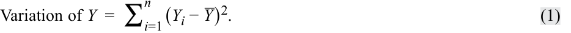
Our goal is to understand what drives these ROAs or, in other words, what explains the variation of Y . The variation of Y is often referred to as the sum of squares total (SST) , or the total sum of squares.
Mục tiêu của chúng ta là hiểu điều gì thúc đẩy các mức ROA này hay nói cách khác, điều gì giải thích sự biến thiên của $Y$. Sự biến thiên của $Y$ thường được gọi là tổng bình phương toàn phần (sum of squares total – SST), hay tổng các bình phương toàn phần (total sum of squares).
We now ask whether it is possible to explain the variation of the ROA using another variable that also varies among the companies; note that if this other variable is constant or random, it would not explain the ROA differences. Suppose the analyst believes that the capital expenditures in the previous period, scaled by the prior period’s beginning property, plant, and equipment, are a driver for the ROA variable. Let us represent this scaled capital expenditures variable as CAPEX, as we show in Exhibit 2.
Bây giờ chúng ta đặt câu hỏi liệu có thể giải thích sự biến thiên của ROA bằng cách sử dụng một biến số khác cũng biến thiên giữa các công ty hay không; lưu ý rằng nếu biến số khác này là hằng số hoặc ngẫu nhiên, nó sẽ không giải thích được sự khác biệt về ROA. Giả sử nhà phân tích tin rằng chi tiêu vốn (capital expenditures) trong kỳ trước, được chuẩn hóa theo quy mô (scaled) bằng giá trị bất động sản, nhà xưởng và thiết bị (property, plant, and equipment – PP&E) đầu kỳ trước, là yếu tố thúc đẩy biến số ROA. Hãy biểu diễn biến số chi tiêu vốn đã chuẩn hóa theo quy mô này là CAPEX, như chúng ta trình bày trong Bảng 2.
Exhibit 2: Return on Assets and Scaled Capital Expenditures
Bảng 2: Tỷ suất sinh lợi trên tài sản (ROA) và Chi tiêu vốn đã chuẩn hóa theo quy mô (CAPEX)
| Company | ROA (%) | CAPEX (%) |
|---|---|---|
| A | 6.0 | 0.7 |
| B | 4.0 | 0.4 |
| C | 15.0 | 5.0 |
| D | 20.0 | 10.0 |
| E | 10.0 | 8.0 |
| F | 20.0 | 12.5 |
| Arithmetic mean | 12.5 | 6.1 |
| Công ty (Company) | ROA (%) | CAPEX (%) |
|---|---|---|
| A | 6.0 | 0.7 |
| B | 4.0 | 0.4 |
| C | 15.0 | 5.0 |
| D | 20.0 | 10.0 |
| E | 10.0 | 8.0 |
| F | 20.0 | 12.5 |
| Trung bình cộng (Arithmetic mean) | 12.5 | 6.1 |
Let X represent the explanatory variable, in this case, CAPEX. Then Xi will represent an observation of our explanatory variable, and X will represent the mean value for the explanatory variable, that is, the mean of all of our CAPEX values. The variation of _X is calculated as follows:
Gọi $X$ là biến giải thích (explanatory variable), trong trường hợp này là CAPEX. Khi đó $X_i$ sẽ đại diện cho một quan sát của biến giải thích của chúng ta, và $\bar{X}$ sẽ đại diện cho giá trị trung bình của biến giải thích, tức là trung bình của tất cả các giá trị CAPEX của chúng ta. Sự biến thiên của $X$ được tính như sau:
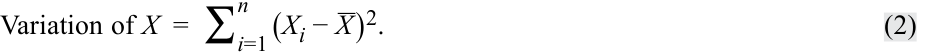
We can see the relation between ROA and CAPEX in the scatter plot (or scattergram) in Exhibit 3, which represents the two variables in two dimensions. Typically, we present the variable whose variation we want to explain along the vertical axis and the variable whose variation we want to use to explain that variation along the horizontal axis. Each point in this scatter plot represents a paired observation that consists of CAPEX and ROA. From a casual visual inspection, a positive relation is apparent between ROA and CAPEX: Companies with higher CAPEX tend to have a higher ROA.
Chúng ta có thể thấy mối quan hệ giữa ROA và CAPEX trong biểu đồ phân tán (scatter plot / scattergram) ở Hình 3, biểu diễn hai biến số trên không gian hai chiều. Thông thường, chúng ta trình bày biến số mà chúng ta muốn giải thích sự biến thiên dọc theo trục tung (vertical axis) và biến số mà chúng ta muốn sử dụng để giải thích sự biến thiên đó dọc theo trục hoành (horizontal axis). Mỗi điểm trong biểu đồ phân tán này đại diện cho một quan sát theo cặp bao gồm CAPEX và ROA. Qua quan sát trực quan thông thường, có thể thấy rõ một mối quan hệ thuận chiều (positive relation) giữa ROA và CAPEX: Các công ty có CAPEX cao hơn có xu hướng có ROA cao hơn.
Exhibit 3: Scatter Plot of ROA and CAPEX
Hình 3: Biểu đồ phân tán (Scatter Plot) của ROA và CAPEX
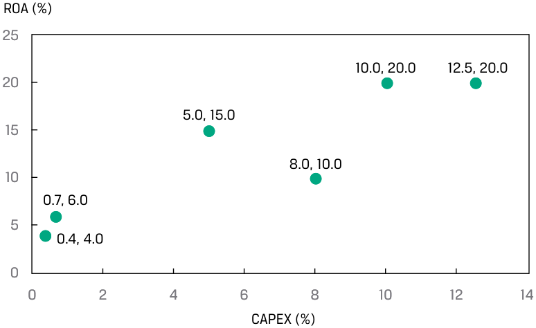
Chú thích hình ảnh: Trục tung: ROA (%) từ 0 đến 25. Trục hoành: CAPEX (%) từ 0 đến 14. Các điểm dữ liệu $(X, Y)$: $(0.4, 4.0)$, $(0.7, 6.0)$, $(5.0, 15.0)$, $(8.0, 10.0)$, $(10.0, 20.0)$, $(12.5, 20.0)$.
In the ROA example, we use the capital expenditures to explain the ROAs. We refer to the variable whose variation is being explained as the dependent variable , or the explained variable; it is typically denoted by Y . We refer to the variable whose variation is being used to explain the variation of the dependent variable as the independent variable , or the explanatory variable; it is typically denoted by X . Therefore, in our example, the ROA is the dependent variable ( Y ) and CAPEX is the independent variable ( X ).
Trong ví dụ về ROA, chúng ta sử dụng chi tiêu vốn để giải thích ROA. Chúng ta gọi biến số có sự biến thiên đang được giải thích là biến phụ thuộc (dependent variable), hay biến được giải thích (explained variable); nó thường được ký hiệu là $Y$. Chúng ta gọi biến số có sự biến thiên được sử dụng để giải thích sự biến thiên của biến phụ thuộc là biến độc lập (independent variable), hay biến giải thích (explanatory variable); nó thường được ký hiệu là $X$. Do đó, trong ví dụ của chúng ta, ROA là biến phụ thuộc ($Y$) và CAPEX là biến độc lập ($X$).
A common method used to relate the dependent and independent variables is through the estimation of a linear relationship, which implies describing the relation between the two variables as represented by a straight line. If we have only one independent variable, we refer to the method as simple linear regression (SLR) , or linear regression; if we have more than one independent variable, we refer to the method as multiple regression.
Một phương pháp phổ biến được sử dụng để liên hệ biến phụ thuộc và biến độc lập là thông qua việc ước lượng một mối quan hệ tuyến tính (linear relationship), ngụ ý việc mô tả mối quan hệ giữa hai biến số được biểu diễn bằng một đường thẳng. Nếu chúng ta chỉ có một biến độc lập, chúng ta gọi phương pháp này là hồi quy tuyến tính đơn (simple linear regression – SLR), hay hồi quy tuyến tính; nếu chúng ta có nhiều hơn một biến độc lập, chúng ta gọi phương pháp này là hồi quy bội (multiple regression).
Linear regression allows us to test hypotheses about the relationship between two variables by quantifying the strength of the relationship between the two variables and to use one variable to make predictions about the other variable.
Hồi quy tuyến tính cho phép chúng ta kiểm định các giả thuyết về mối quan hệ giữa hai biến số bằng cách lượng hóa độ mạnh của mối quan hệ giữa hai biến số đó và sử dụng một biến số để đưa ra các dự báo về biến số kia.
IDENTIFYING THE DEPENDENT AND INDEPENDENT VARIABLES IN A REGRESSION
XÁC ĐỊNH BIẾN PHỤ THUỘC VÀ BIẾN ĐỘC LẬP TRONG HỒI QUY
An analyst is researching the relationship between corporate earnings growth and stock returns. Specifically, she is interested in whether earnings revisions are correlated with stock price returns in the same period. She collects five years of monthly data on earnings per share (EPS) revisions and stock price returns for a sample of 100 companies.
Một nhà phân tích đang nghiên cứu mối quan hệ giữa tăng trưởng thu nhập doanh nghiệp và tỷ suất sinh lợi cổ phiếu. Cụ thể, cô ấy quan tâm đến việc liệu các đợt điều chỉnh dự báo thu nhập (earnings revisions) có tương quan với tỷ suất sinh lợi giá cổ phiếu trong cùng kỳ hay không. Cô thu thập dữ liệu hàng tháng trong năm năm về các đợt điều chỉnh thu nhập trên mỗi cổ phần (earnings per share – EPS) và tỷ suất sinh lợi giá cổ phiếu cho một mẫu gồm 100 công ty.
- What are the dependent and independent variables in her model?
- Biến phụ thuộc và biến độc lập trong mô hình của cô ấy là gì?
Solution:
Lời giải:
The dependent variable is monthly stock price returns, and the independent variable is EPS revisions. In the analyst’s model, the variation in monthly stock price returns is being explained by the variation in EPS revisions.
Biến phụ thuộc là tỷ suất sinh lợi giá cổ phiếu hàng tháng, và biến độc lập là các đợt điều chỉnh EPS. Trong mô hình của nhà phân tích, sự biến thiên của tỷ suất sinh lợi giá cổ phiếu hàng tháng đang được giải thích bởi sự biến thiên của các đợt điều chỉnh EPS.
Estimating the Parameters of a Simple Linear Regression
Ước lượng các Tham số của Hồi quy Tuyến tính Đơn (Estimating the Parameters of a Simple Linear Regression)
The Basics of Simple Linear Regression
_Những vấn đề cơ bản của Hồi quy Tuyến tính Đơn (The Basics of Simple Linear Regression)_
Regression analysis begins with the dependent variable, the variable whose variation you are seeking to explain. The independent variable is the variable whose variation you are using to explain changes in the dependent variable. For example, you might try to explain small-stock returns (the dependent variable) using returns to the S&P 500 Index (the independent variable). Or you might try to explain a country’s inflation rate (the dependent variable) as a function of growth in its money supply (the independent variable).
Phân tích hồi quy bắt đầu với biến phụ thuộc, biến số mà bạn đang tìm cách giải thích sự biến thiên của nó. Biến độc lập là biến số có sự biến thiên được bạn sử dụng để giải thích những thay đổi trong biến phụ thuộc. Ví dụ, bạn có thể cố gắng giải thích tỷ suất sinh lợi của cổ phiếu vốn hóa nhỏ (biến phụ thuộc) bằng cách sử dụng tỷ suất sinh lợi của Chỉ số S&P 500 (biến độc lập). Hoặc bạn có thể cố gắng giải thích tỷ lệ lạm phát của một quốc gia (biến phụ thuộc) như một hàm số của tốc độ tăng trưởng cung tiền của quốc gia đó (biến độc lập).
As the name implies, linear regression assumes a linear relationship between the dependent and the independent variables. The goal is to fit a line to the observations on Y and X to minimize the squared deviations from the line; this is the least squares criterion—hence, the name least squares regression. Because of its common use, linear regression is often referred to as ordinary least squares (OLS) regression.
Đúng như tên gọi, hồi quy tuyến tính giả định một mối quan hệ tuyến tính giữa biến phụ thuộc và biến độc lập. Mục tiêu là khớp một đường thẳng (fit a line) với các quan sát của $Y$ và $X$ sao cho tối thiểu hóa tổng bình phương các độ lệch so với đường thẳng đó; đây là tiêu chuẩn bình phương tối thiểu (least squares criterion)—do đó có tên là hồi quy bình phương tối thiểu (least squares regression). Vì được sử dụng phổ biến, hồi quy tuyến tính thường được gọi là hồi quy bình phương tối thiểu thông thường (ordinary least squares – OLS).
Using notation, the linear relation between the dependent and independent variables is described as follows:
Sử dụng ký hiệu toán học, mối quan hệ tuyến tính giữa biến phụ thuộc và biến độc lập được mô tả như sau:
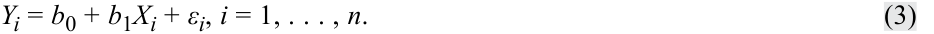
Equation 3 is a model that does not require that every (X, Y) pair for an observation fall on the regression line. This equation states that the dependent variable, Y , is equal to the intercept , b 0, plus a slope coefficient , b 1, multiplied by the independent variable, X , plus an error term , ε. The error term, or simply the error, represents the difference between the observed value of Y and that expected from the true underlying population relation between Y and X . We refer to the intercept, b 0, and the slope coefficient, b 1, as the regression coefficients ? A way that we often describe this simple linear regression relation is that Y is regressed on X .
Phương trình 3 là một mô hình không đòi hỏi mọi cặp $(X, Y)$ của một quan sát phải nằm trên đường hồi quy. Phương trình này phát biểu rằng biến phụ thuộc, $Y$, bằng hệ số chặn (intercept), $b_0$, cộng với hệ số góc (slope coefficient), $b_1$, nhân với biến độc lập, $X$, cộng với hạng tử sai số (error term), $\varepsilon$. Hạng tử sai số, hay đơn giản là sai số (error), đại diện cho phần chênh lệch giữa giá trị quan sát được của $Y$ và giá trị kỳ vọng từ mối quan hệ tổng thể thực sự ngầm định (true underlying population relation) giữa $Y$ và $X$. Chúng ta gọi hệ số chặn, $b_0$, và hệ số góc, $b_1$, là các hệ số hồi quy (regression coefficients). Một cách mà chúng ta thường dùng để mô tả mối quan hệ hồi quy tuyến tính đơn này là $Y$ được hồi quy theo $X$ ($Y$ is regressed on $X$).
Consider the ROA and CAPEX scatter diagram from Exhibit 3, which we elaborate on in Exhibit 4 by including the fitted regression line. This line represents the average relationship between ROA and CAPEX; not every observation falls on the line, but the line describes the mean relation between ROA and CAPEX.
Hãy xem xét biểu đồ phân tán ROA và CAPEX từ Hình 3, được chúng ta chi tiết hóa trong Hình 4 bằng cách đưa thêm đường hồi quy ước lượng (fitted regression line). Đường thẳng này đại diện cho mối quan hệ trung bình giữa ROA và CAPEX; không phải mọi quan sát đều nằm trên đường thẳng, nhưng đường thẳng này mô tả mối quan hệ trung bình giữa ROA và CAPEX.
Exhibit 4: Fitted Regression Line of ROA and CAPEX
Hình 4: Đường hồi quy ước lượng (Fitted Regression Line) của ROA và CAPEX
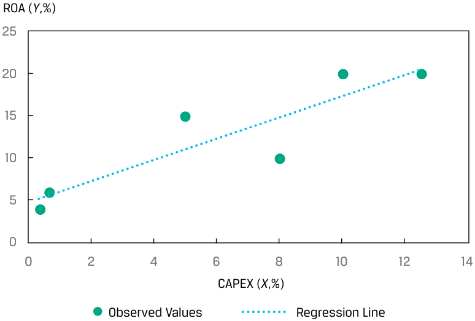
Chú thích hình ảnh: Trục tung: ROA ($Y$, %). Trục hoành: CAPEX ($X$, %). Các chấm tròn biểu thị Giá trị quan sát (Observed Values), đường thẳng nét liền biểu thị Đường hồi quy (Regression Line).
Estimating the Regression Line
_Ước lượng Đường Hồi quy (Estimating the Regression Line)_
We cannot observe the population parameter values b 0 and b 1 in a regression model. Instead, we observe only bˆ 0 and bˆ 1 , which are estimates (as indicated by the “hats” above the coefficients) of the population parameters based on the sample. Thus, predictions must be based on the parameters’ estimated values, and testing is based on estimated values in relation to the hypothesized population values.
Chúng ta không thể quan sát được các giá trị tham số tổng thể $b_0$ và $b_1$ trong một mô hình hồi quy. Thay vào đó, chúng ta chỉ quan sát được $\hat{b}_0$ và $\hat{b}_1$, là các ước lượng (như được biểu thị bằng dấu “mũ” phía trên các hệ số) của các tham số tổng thể dựa trên mẫu. Do đó, các dự báo phải dựa trên các giá trị ước lượng của tham số, và việc kiểm định được dựa trên các giá trị ước lượng trong mối tương quan với các giá trị tổng thể theo giả thuyết.
We estimate the regression line as the line that best fits the observations. In simple linear regression, the estimated intercept, bˆ 0 , and slope, bˆ 1 , are such that the sum of the squared vertical distances from the observations to the fitted line is minimized. The focus is on the sum of the squared differences between the observations on Yi and the corresponding estimated value, Yˆ i , on the regression line.
Chúng ta ước lượng đường hồi quy là đường thẳng khớp tốt nhất (best fits) với các quan sát. Trong hồi quy tuyến tính đơn, hệ số chặn ước lượng, $\hat{b}_0$, và hệ số góc ước lượng, $\hat{b}_1$, được xác định sao cho tổng bình phương khoảng cách theo chiều dọc (vertical distances) từ các quan sát đến đường thẳng ước lượng được tối thiểu hóa. Trọng tâm đặt vào tổng bình phương các chênh lệch giữa các quan sát $Y_i$ và giá trị ước lượng tương ứng, $\hat{Y}_i$, nằm trên đường hồi quy.
We represent the value of the dependent variable for the i th observation that falls on the line as Yˆ i , which is equal to bˆ 0 + bˆ 1 Xi . Yˆ i is what the estimated value of the Y variable would be for the i th observation based on the mean relationship between Y and X . The residual for the i th observation, ei , is how much the observed value of Yi differs from the Yˆ i estimated using the regression line: ei = Yi − Yˆ i . Note the subtle difference between the error term and the residual: The error term refers to the true underlying population relationship, whereas the residual refers to the fitted linear relation based on the sample.
Chúng ta biểu diễn giá trị của biến phụ thuộc cho quan sát thứ $i$ nằm trên đường thẳng là $\hat{Y}_i$, bằng $\hat{b}_0 + \hat{b}_1 X_i$. $\hat{Y}_i$ là giá trị ước lượng của biến $Y$ cho quan sát thứ $i$ dựa trên mối quan hệ trung bình giữa $Y$ và $X$. Phần dư (residual) cho quan sát thứ $i$, $e_i$, là mức chênh lệch giữa giá trị quan sát được của $Y_i$ so với $\hat{Y}_i$ được ước lượng bằng đường hồi quy: $e_i = Y_i - \hat{Y}_i$. Hãy lưu ý sự khác biệt tinh tế giữa hạng tử sai số (error term) và phần dư (residual): Hạng tử sai số đề cập đến mối quan hệ tổng thể thực sự ngầm định, trong khi phần dư đề cập đến mối quan hệ tuyến tính ước lượng dựa trên mẫu.
Fitting the line requires minimizing the sum of the squared residuals, the sum of squares error (SSE) , also known as the residual sum of squares:
Việc khớp đường thẳng đòi hỏi phải tối thiểu hóa tổng bình phương các phần dư, tức tổng bình phương sai số (sum of squares error – SSE), còn được gọi là tổng bình phương phần dư (residual sum of squares):
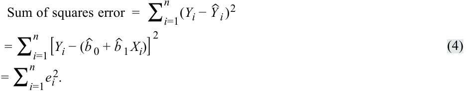
Using least squares regression to estimate the values of the population parameters of b 0 and b 1, we can fit a line through the observations of X and Y that explains the value that Y takes for any particular value of X .
Sử dụng hồi quy bình phương tối thiểu để ước lượng giá trị của các tham số tổng thể $b_0$ và $b_1$, chúng ta có thể vẽ một đường thẳng đi qua các quan sát của $X$ và $Y$ nhằm giải thích giá trị mà $Y$ nhận đối với bất kỳ giá trị cụ thể nào của $X$.
As seen in Exhibit 5, the residuals are represented by the vertical distances from the fitted line (see the third and fifth observations, Companies C and E, respectively) and are, therefore, in the units of measurement represented by the dependent variable. The residual is in the same unit of measurement as the dependent variable: If the dependent variable is in euros, the error term is in euros, and if the dependent variable is in growth rates, the error term is in growth rates.
Như thấy trong Hình 5, các phần dư được biểu diễn bằng khoảng cách theo chiều dọc tính từ đường thẳng ước lượng (xem quan sát thứ ba và thứ năm, tương ứng là Công ty C và Công ty E) và do đó, có cùng đơn vị đo lường với biến phụ thuộc. Phần dư có cùng đơn vị đo lường với biến phụ thuộc: Nếu biến phụ thuộc tính bằng euro thì hạng tử sai số tính bằng euro, và nếu biến phụ thuộc tính bằng tốc độ tăng trưởng thì hạng tử sai số tính bằng tốc độ tăng trưởng.
Exhibit 5: Residuals of the Linear Regression
Hình 5: Phần dư của Hồi quy Tuyến tính (Residuals of the Linear Regression)
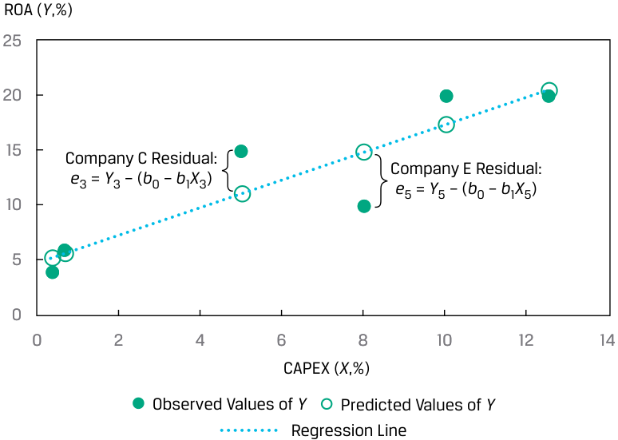
Chú thích hình ảnh: Trục tung: ROA ($Y$, %). Trục hoành: CAPEX ($X$, %). Hiển thị phần dư của Công ty C: $e_3 = Y_3 - (\hat{b}_0 + \hat{b}_1 X_3)$ và phần dư của Công ty E: $e_5 = Y_5 - (\hat{b}_0 + \hat{b}_1 X_5)$, cùng với Giá trị quan sát của $Y$ (Observed Values of $Y$), Giá trị dự báo của $Y$ (Predicted Values of $Y$), và Đường hồi quy (Regression Line).
How do we calculate the intercept ( bˆ 0 ) and the slope ( bˆ 1 ) for a given sample of ( Y , X ) pairs of observations? The slope is the ratio of the covariance between Y and X to the variance of X , where Y is the mean of the _Y variable and X is the mean of _X variable:
Làm thế nào chúng ta tính được hệ số chặn ($\hat{b}_0$) và hệ số góc ($\hat{b}_1$) cho một mẫu gồm các cặp quan sát $(Y, X)$ cho trước? Hệ số góc là tỷ số giữa hiệp phương sai (covariance) của $Y$ và $X$ với phương sai (variance) của $X$, trong đó $\bar{Y}$ là trung bình của biến $Y$ và $\bar{X}$ là trung bình của biến $X$:
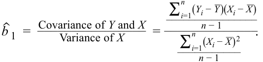
Simplifying,
Rút gọn lại,
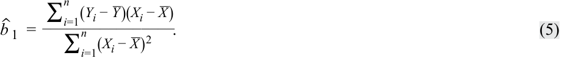
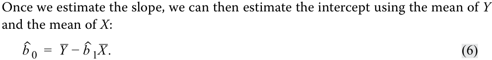
Incremental values to calculate the slope and the intercept are in Exhibit 6.
Một khi chúng ta ước lượng được hệ số góc, chúng ta có thể ước lượng hệ số chặn bằng cách sử dụng giá trị trung bình của $Y$ và giá trị trung bình của $X$:
Các giá trị thành phần để tính hệ số góc và hệ số chặn được trình bày trong Bảng 6.
Exhibit 6: Estimating Slope and Intercept for the ROA Model
Bảng 6: Ước lượng Hệ số góc và Hệ số chặn cho Mô hình ROA
| Company | ROA (Yi) | CAPEX (Xi) | ( Y i− _ Y) 2 |
( X i− _ X) 2 |
( Y i− _ Y) ( X i− _ X) |
|---|---|---|---|---|---|
| A | 6.0 | 0.7 | 42.25 | 29.16 | 35.10 |
| B | 4.0 | 0.4 | 72.25 | 32.49 | 48.45 |
| C | 15.0 | 5.0 | 6.25 | 1.21 | −2.75 |
| D | 20.0 | 10.0 | 56.25 | 15.21 | 29.25 |
| E | 10.0 | 8.0 | 6.25 | 3.61 | −4.75 |
| F | 20.0 | 12.5 | 56.25 | 40.96 | 48.00 |
| Công ty (Company) | ROA ($Y_i$) | CAPEX ($X_i$) | $(Y_i - \bar{Y})^2$ | $(X_i - \bar{X})^2$ | $(Y_i - \bar{Y})(X_i - \bar{X})$ |
|---|---|---|---|---|---|
| A | 6.0 | 0.7 | 42.25 | 29.16 | 35.10 |
| B | 4.0 | 0.4 | 72.25 | 32.49 | 48.45 |
| C | 15.0 | 5.0 | 6.25 | 1.21 | −2.75 |
| D | 20.0 | 10.0 | 56.25 | 15.21 | 29.25 |
| E | 10.0 | 8.0 | 6.25 | 3.61 | −4.75 |
| F | 20.0 | 12.5 | 56.25 | 40.96 | 48.00 |
| Company | ROA (Yi) | CAPEX (Xi) | ( Y i− _ Y) 2 |
( X i− _ X) 2 |
( Y i− _ Y) ( X i− _ X) |
|---|---|---|---|---|---|
| Sum | 75.0 | 36.6 | 239.50 | 122.64 | 153.30 |
| Arithmetic | 12.5 | 6.1 | |||
| mean |
| Công ty (Company) | ROA ($Y_i$) | CAPEX ($X_i$) | $(Y_i - \bar{Y})^2$ | $(X_i - \bar{X})^2$ | $(Y_i - \bar{Y})(X_i - \bar{X})$ |
|---|---|---|---|---|---|
| Tổng (Sum) | 75.0 | 36.6 | 239.50 | 122.64 | 153.30 |
| Trung bình cộng (Arithmetic mean) | 12.5 | 6.1 |
Slope coefficient: b_ˆ 1 =153.30 122.64= 1.25. Intercept: bˆ 0 = 12.5 − (1.25 × 6.10 ) = 4.875. ROW regression model: Yˆ i = 4.875 + 1.25 Xi + εi .
- Hệ số góc (Slope coefficient): $\hat{b}_1 = \frac{153.30}{122.64} = 1.25$.
- Hệ số chặn (Intercept): $\hat{b}_0 = 12.5 - (1.25 \times 6.10) = 4.875$.
- Mô hình hồi quy ROA: $\hat{Y}_i = 4.875 + 1.25 X_i + \varepsilon_i$.
Notice the similarity of the formula for the slope coefficient and that of the pairwise correlation. The sample correlation, r , is the ratio of the covariance to the product of the standard deviations:
Hãy lưu ý sự tương đồng giữa công thức tính hệ số góc và công thức tính hệ số tương quan cặp (pairwise correlation). Hệ số tương quan mẫu, $r$, là tỷ số giữa hiệp phương sai với tích của hai độ lệch chuẩn:
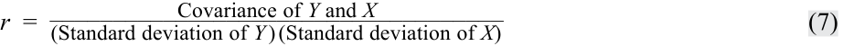
The subtle difference between the slope and the correlation formulas is in the denominator: For the slope, this is the variance of the independent variable, but for the correlation, the denominator is the product of the standard deviations. For our ROA and CAPEX analysis,
Sự khác biệt tinh tế giữa công thức hệ số góc và công thức hệ số tương quan nằm ở mẫu số: Đối với hệ số góc, mẫu số là phương sai của biến độc lập, nhưng đối với hệ số tương quan, mẫu số là tích của hai độ lệch chuẩn. Đối với phân tích ROA và CAPEX của chúng ta:
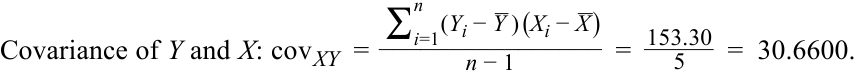
Standard deviation of Y and X :
Độ lệch chuẩn của $Y$ và $X$:
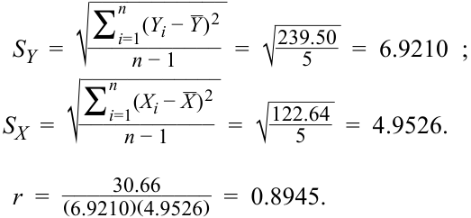
Because the denominators of both the slope and the correlation are positive, the sign of the slope and the correlation are driven by the numerator: If the covariance is positive, both the slope and the correlation are positive, and if the covariance is negative, both the slope and the correlation are negative.
Bởi vì mẫu số của cả hệ số góc và hệ số tương quan đều dương, dấu của hệ số góc và hệ số tương quan được quyết định bởi tử số: Nếu hiệp phương sai dương, cả hệ số góc và hệ số tương quan đều dương, và nếu hiệp phương sai âm, cả hệ số góc và hệ số tương quan đều âm.
EXAMPLE 1
VÍ DỤ 1
How Do Analysts Perform Simple Linear Regression?
Các Nhà phân tích Thực hiện Hồi quy Tuyến tính Đơn như thế nào?
Typically, an analyst will use the data analysis functions on a spreadsheet, such as Microsoft Excel, or a statistical package in the R or Python programming languages to perform linear regression analysis. The following are some of the more common choices in practice.
Thông thường, một nhà phân tích sẽ sử dụng các hàm phân tích dữ liệu trên bảng tính, chẳng hạn như Microsoft Excel, hoặc một gói thống kê trong ngôn ngữ lập trình R hoặc Python để thực hiện phân tích hồi quy tuyến tính. Dưới đây là một số lựa chọn phổ biến hơn trong thực tiễn.
Simple Linear Regression: Intercept and Slope
Hồi quy Tuyến tính Đơn: Hệ số chặn và Hệ số góc (Intercept and Slope)
■ Excel : Use the INTERCEPT, SLOPE functions.
■ Excel: Sử dụng các hàm
INTERCEPT,SLOPE.
■ R : Use the lm function.
■ R: Sử dụng hàm
lm.
■ Python : Use the sm.OLS function in the statsmodels package.
■ Python: Sử dụng hàm
sm.OLStrong góistatsmodels.
Correlations
Tương quan (Correlations)
-
Excel : Use the CORREL function.
-
R : Use the cor function in the stats library.
-
Python : Use the corrcoef function in the numpy library.
-
Excel: Sử dụng hàm
CORREL. -
R: Sử dụng hàm
cortrong thư việnstats. -
Python: Sử dụng hàm
corrcoeftrong thư việnnumpy.
Note that in R and Python, there are many choices for regression and correlation analysis.
Lưu ý rằng trong R và Python, có rất nhiều lựa chọn để phân tích hồi quy và tương quan.
Interpreting the Regression Coefficients
_Diễn giải các Hệ số Hồi quy (Interpreting the Regression Coefficients)_
What is the meaning of the regression coefficients? The intercept is the value of the dependent variable if the value of the independent variable is zero. Importantly, this does not make sense in some contexts, especially if it is unrealistic that the independent variable would be zero. For example, if we have a model in which money supply explains GDP growth, the intercept has no meaning because, practically speaking, zero money supply is not possible. If the independent variable were money supply growth, however, the intercept is meaningful. The slope is the change in the dependent variable for a one-unit change in the independent variable. If the slope is positive, then the change in the independent variable and that of the dependent variable will be in the same direction; if the slope is negative, the change in the independent variable and that of the dependent variable will be in opposite directions.
Ý nghĩa của các hệ số hồi quy là gì? Hệ số chặn (intercept) là giá trị của biến phụ thuộc nếu giá trị của biến độc lập bằng 0. Điều quan trọng là con số này không có ý nghĩa trong một số bối cảnh, đặc biệt nếu việc biến độc lập bằng 0 là phi thực tế. Ví dụ, nếu chúng ta có một mô hình trong đó cung tiền giải thích tăng trưởng GDP, thì hệ số chặn không có ý nghĩa bởi vì trên thực tế, mức cung tiền bằng 0 là điều không thể xảy ra. Tuy nhiên, nếu biến độc lập là tốc độ tăng trưởng cung tiền, thì hệ số chặn lại có ý nghĩa. Hệ số góc (slope) là mức thay đổi trong biến phụ thuộc ứng với một đơn vị thay đổi trong biến độc lập. Nếu hệ số góc dương, thì sự thay đổi của biến độc lập và sự thay đổi của biến phụ thuộc sẽ cùng chiều; nếu hệ số góc âm, sự thay đổi của biến độc lập và sự thay đổi của biến phụ thuộc sẽ ngược chiều nhau.
EXAMPLE 2
VÍ DỤ 2
Interpreting Positive and Negative Slopes
Diễn giải Hệ số góc Dương và Âm (Interpreting Positive and Negative Slopes)
Suppose the dependent variable (Y) is in millions of euros and the independent variable ( X ) is in millions of US dollars.
Giả sử biến phụ thuộc ($Y$) tính bằng triệu euro và biến độc lập ($X$) tính bằng triệu đô la Mỹ.
If the slope is positive 1.2, then
Nếu hệ số góc là dương 1,2, thì:
-
↑ USD1 million → ↑ EUR1.2 million
-
↓ USD1 million → ↓ EUR1.2 million
-
↑ 1 triệu USD → ↑ 1,2 triệu EUR
-
↓ 1 triệu USD → ↓ 1,2 triệu EUR
If the slope is negative 1.2, then
Nếu hệ số góc là âm 1,2, thì:
-
↑ USD1 million → ↓ EUR1.2 million
-
↓ USD1 million → ↑ EUR1.2 million
-
↑ 1 triệu USD → ↓ 1,2 triệu EUR
-
↓ 1 triệu USD → ↑ 1,2 triệu EUR
Using the ROA regression model from Exhibit 6, we would interpret the estimated coefficients as follows:
Sử dụng mô hình hồi quy ROA từ Bảng 6, chúng ta sẽ diễn giải các hệ số ước lượng như sau:
-
The return on assets for a company is 4.875% if the company makes no capital expenditures.
-
If CAPEX increases by one unit—say, from 4% to 5%—ROA increases by 1.25%.
-
Tỷ suất sinh lợi trên tài sản (ROA) của một công ty là 4,875% nếu công ty không thực hiện bất kỳ khoản chi tiêu vốn nào.
-
Nếu CAPEX tăng thêm một đơn vị—chẳng hạn từ 4% lên 5%—ROA sẽ tăng thêm 1,25%.
Using the estimated regression coefficients, we can determine the values of the dependent variable if they follow the average relationship between the dependent and independent variables. A result of the mathematics of the least squares fitting of the regression line is that the expected value of the residual term is zero: E (ε) = 0.
Sử dụng các hệ số hồi quy ước lượng, chúng ta có thể xác định giá trị của biến phụ thuộc nếu chúng tuân theo mối quan hệ trung bình giữa biến phụ thuộc và biến độc lập. Một kết quả toán học của việc khớp đường hồi quy theo phương pháp bình phương tối thiểu là giá trị kỳ vọng của hạng tử phần dư bằng 0: $E(\varepsilon) = 0$.
We show the calculation of the predicted dependent variable and residual term for each observation in the ROA example in Exhibit 7. Note that the sum and average of Yi and Yˆ 1 are the same, and the sum of the residuals is zero.
Chúng ta trình bày phép tính biến phụ thuộc dự báo và hạng tử phần dư cho từng quan sát trong ví dụ ROA ở Bảng 7. Lưu ý rằng tổng và trung bình của $Y_i$ và $\hat{Y}_i$ là như nhau, và tổng các phần dư bằng 0.
Exhibit 7: Calculation of the Dependent Variable and Residuals for the ROA and CAPEX Model
Bảng 7: Tính toán Biến phụ thuộc và Phần dư cho Mô hình ROA và CAPEX
| (1) | (2) | (3) | (4) | |
|---|---|---|---|---|
| Company | ROA (Yi) | CAPEX(Xi) | Predicted ROA ( ˆ Yi ) |
(1) − (3) (2) Residual (ei) |
| A | 6.0 | 0.7 | 5.750 | 0.250 |
| B | 4.0 | 0.4 | 5.375 | −1.375 |
| C | 15.0 | 5.0 | 11.125 | 3.875 |
| D | 20.0 | 10.0 | 17.375 | 2.625 |
| E | 10.0 | 8.0 | 14.875 | −4.875 |
| F | 20.0 | 12.5 | 20.500 | −0.500 |
| Sum | 75.0 | 36.6 | 75.000 | 0.000 |
| Average | 12.5 | 6.1 | 12.5 | 0.000 |
| (1) | (2) | (3) | (4) | |
|---|---|---|---|---|
| Công ty (Company) | ROA ($Y_i$) | CAPEX ($X_i$) | ROA dự báo ($\hat{Y}_i$) | (1) − (3) Phần dư ($e_i$) |
| A | 6.0 | 0.7 | 5.750 | 0.250 |
| B | 4.0 | 0.4 | 5.375 | −1.375 |
| C | 15.0 | 5.0 | 11.125 | 3.875 |
| D | 20.0 | 10.0 | 17.375 | 2.625 |
| E | 10.0 | 8.0 | 14.875 | −4.875 |
| F | 20.0 | 12.5 | 20.500 | −0.500 |
| Tổng (Sum) | 75.0 | 36.6 | 75.000 | 0.000 |
| Trung bình (Average) | 12.5 | 6.1 | 12.5 | 0.000 |
For Company C (i = 3),
Yˆ i = bˆ 0 + bˆ 1 X i + ε i = 4.875 + 1.25 X i + ε i
Đối với Công ty C ($i = 3$):
Yˆ i = 4.875 + (1.25 × 5.0 ) = 4.875 + 6.25 = 11.125 Y i − Yˆ i = e i = 15.0 − 11.125 = 3.875, the vertical distance in Exhibit 5.
Whereas the sum of the residuals must equal zero by design, the focus of fitting the regression line in a simple linear regression is minimizing the sum of the squared residual terms.
Trong khi tổng các phần dư phải bằng 0 theo thiết kế, trọng tâm của việc khớp đường hồi quy trong hồi quy tuyến tính đơn là tối thiểu hóa tổng bình phương các hạng tử phần dư.
Cross-Sectional versus Time-Series Regressions
_Hồi quy Dữ liệu Chéo so với Hồi quy Chuỗi Thời gian (Cross-Sectional versus Time-Series Regressions)_
Regression analysis uses two principal types of data: cross sectional and time series. A cross-sectional regression involves many observations of X and Y for the same time period. These observations could come from different companies, asset classes, investment funds, countries, or other entities, depending on the regression model. For example, a cross-sectional model might use data from many companies to test whether predicted EPS growth explains differences in price-to-earnings ratios during a specific time period. Note that if we use cross-sectional observations in a regression, we usually denote the observations as i = 1, 2, . . . , n .
Phân tích hồi quy sử dụng hai loại dữ liệu chính: dữ liệu chéo (cross sectional) và chuỗi thời gian (time series). Hồi quy dữ liệu chéo (cross-sectional regression) bao gồm nhiều quan sát của $X$ và $Y$ trong cùng một khoảng thời gian. Những quan sát này có thể đến từ các công ty, lớp tài sản, quỹ đầu tư, quốc gia hoặc các thực thể khác nhau, tùy thuộc vào mô hình hồi quy. Ví dụ, một mô hình dữ liệu chéo có thể sử dụng dữ liệu từ nhiều công ty để kiểm định xem liệu mức tăng trưởng EPS dự báo có giải thích được sự khác biệt trong hệ số giá trên thu nhập (price-to-earnings ratio – P/E) trong một khoảng thời gian cụ thể hay không. Lưu ý rằng nếu chúng ta sử dụng các quan sát dữ liệu chéo trong một hồi quy, chúng ta thường ký hiệu các quan sát là $i = 1, 2, \dots, n$.
Time-series data use many observations from different time periods for the same company, asset class, investment fund, country, or other entity, depending on the regression model. For example, a time-series model might use monthly data from many years to test whether a country’s inflation rate determines its short-term interest rates. If we use time-series data in a regression, we usually denote the observations as t = 1, 2, . . . , T . Note that in the sections that follow, we primarily use the notation i = 1, 2, . . . , n , even for time series.
Dữ liệu chuỗi thời gian (Time-series data) sử dụng nhiều quan sát từ các khoảng thời gian khác nhau cho cùng một công ty, lớp tài sản, quỹ đầu tư, quốc gia hoặc thực thể khác, tùy thuộc vào mô hình hồi quy. Ví dụ, một mô hình chuỗi thời gian có thể sử dụng dữ liệu hàng tháng từ nhiều năm để kiểm định xem liệu tỷ lệ lạm phát của một quốc gia có quyết định lãi suất ngắn hạn của quốc gia đó hay không. Nếu chúng ta sử dụng dữ liệu chuỗi thời gian trong một hồi quy, chúng ta thường ký hiệu các quan sát là $t = 1, 2, \dots, T$. Lưu ý rằng trong các phần tiếp theo, chúng ta chủ yếu sử dụng ký hiệu $i = 1, 2, \dots, n$, ngay cả đối với chuỗi thời gian.
QUESTION SET
BỘ CÂU HỎI (QUESTION SET)
An analyst is exploring the relationship between a company’s net profit margin and research and development expenditures. He collects data for an industry and calculates the ratio of research and development expenditures to revenues (RDR) and the net profit margin (NPM) for eight companies.
Một nhà phân tích đang khám phá mối quan hệ giữa biên lợi nhuận ròng (net profit margin) của một công ty và chi tiêu nghiên cứu và phát triển (research and development – R&D). Anh ấy thu thập dữ liệu của một ngành và tính toán tỷ lệ chi tiêu nghiên cứu và phát triển trên doanh thu (RDR) và biên lợi nhuận ròng (NPM) cho tám công ty.
Specifically, he wants to explain the net profit margin variation by using the variation observed in the companies’ research and development spending. He reports the data in Exhibit 8.
Cụ thể, anh ấy muốn giải thích sự biến thiên của biên lợi nhuận ròng bằng cách sử dụng sự biến thiên quan sát được trong chi tiêu nghiên cứu và phát triển của các công ty. Anh ấy báo cáo dữ liệu trong Bảng 8.
Exhibit 8: Observations on NPM and RDR for Eight Companies
Bảng 8: Các quan sát về NPM và RDR của Tám Công ty
| Company | NPM (%) | RDR (%) |
|---|---|---|
| 1 | 4 | 8 |
| 2 | 5 | 10 |
| 3 | 10 | 6 |
| 4 | 9 | 5 |
| 5 | 5 | 7 |
| 6 | 6 | 9 |
| 7 | 12 | 5 |
| 8 | 3 | 10 |
| Công ty (Company) | NPM (%) | RDR (%) |
|---|---|---|
| 1 | 4 | 8 |
| 2 | 5 | 10 |
| 3 | 10 | 6 |
| 4 | 9 | 5 |
| 5 | 5 | 7 |
| 6 | 6 | 9 |
| 7 | 12 | 5 |
| 8 | 3 | 10 |
- What is the slope coefficient for this simple linear regression model? Solution:
- Hệ số góc (slope coefficient) của mô hình hồi quy tuyến tính đơn này là bao nhiêu?
The slope coefficient for the regression model is −1.3, and the details for the inputs to this calculation are in Exhibit 9.
Lời giải:
Exhibit 9: Details of Calculation of Slope of NPM Regressed on RDR
Hệ số góc của mô hình hồi quy là $-1.3$, và chi tiết về các dữ liệu đầu vào cho phép tính này được trình bày trong Bảng 9.
| Com- pany |
NPM (%) (Yi) |
RDR (%) (Xi) |
Y i− _ Y |
X i− _ X |
( Y i− _ Y) 2 |
( X i− _ X) 2 |
( Y i− _ Y) ( X i− _ X) |
|---|---|---|---|---|---|---|---|
| 1 | 4 | 8 | −2.8 | 0.5 | 7.5625 | 0.25 | −1.375 |
| 2 | 5 | 10 | −1.8 | 2.5 | 3.0625 | 6.25 | −4.375 |
| 3 | 10 | 6 | 3.3 | −1.5 | 10.5625 | 2.25 | −4.875 |
| 4 | 9 | 5 | 2.3 | −2.5 | 5.0625 | 6.25 | −5.625 |
| 5 | 5 | 7 | −1.8 | −0.5 | 3.0625 | 0.25 | 0.875 |
| 6 | 6 | 9 | −0.8 | 1.5 | 0.5625 | 2.25 | −1.125 |
| 7 | 12 | 5 | 5.3 | −2.5 | 27.5625 | 6.25 | −13.125 |
| 8 | 3 | 10 | −3.8 | 2.5 | 14.0625 | 6.25 | −9.375 |
| Sum | 54 | 60 | 0.0 | 0.0 | 71.5000 | 30.00 | −39.000 |
| Average | 6.75 | 7.5 |
Bảng 9: Chi tiết tính toán Hệ số góc của NPM được hồi quy theo RDR
_ Slope coefficient: bˆ 1 =− 39 30= − 1.3.
| Công ty | NPM (%) ($Y_i$) | RDR (%) ($X_i$) | $Y_i - \bar{Y}$ | $X_i - \bar{X}$ | $(Y_i - \bar{Y})^2$ | $(X_i - \bar{X})^2$ | $(Y_i - \bar{Y})(X_i - \bar{X})$ |
|---|---|---|---|---|---|---|---|
| 1 | 4 | 8 | −2.8 | 0.5 | 7.5625 | 0.25 | −1.375 |
| 2 | 5 | 10 | −1.8 | 2.5 | 3.0625 | 6.25 | −4.375 |
| 3 | 10 | 6 | 3.3 | −1.5 | 10.5625 | 2.25 | −4.875 |
| 4 | 9 | 5 | 2.3 | −2.5 | 5.0625 | 6.25 | −5.625 |
| 5 | 5 | 7 | −1.8 | −0.5 | 3.0625 | 0.25 | 0.875 |
| 6 | 6 | 9 | −0.8 | 1.5 | 0.5625 | 2.25 | −1.125 |
| 7 | 12 | 5 | 5.3 | −2.5 | 27.5625 | 6.25 | −13.125 |
| 8 | 3 | 10 | −3.8 | 2.5 | 14.0625 | 6.25 | −9.375 |
| Tổng (Sum) | 54 | 60 | 0.0 | 0.0 | 71.5000 | 30.00 | −39.000 |
| Trung bình (Average) | 6.75 | 7.5 |
- What is the intercept for this regression model?
- Hệ số góc (Slope coefficient): $\hat{b}_1 = \frac{-39}{30} = -1.3$.
- Hệ số chặn (intercept) của mô hình hồi quy này là bao nhiêu?
Solution:
Lời giải:
The intercept of the regression model is 16.5:
Hệ số chặn của mô hình hồi quy là 16,5:
Intercept: bˆ 0 = 6.75 −( − 1.3 × 7.5) = 6.75 + 9.75 = 16.5